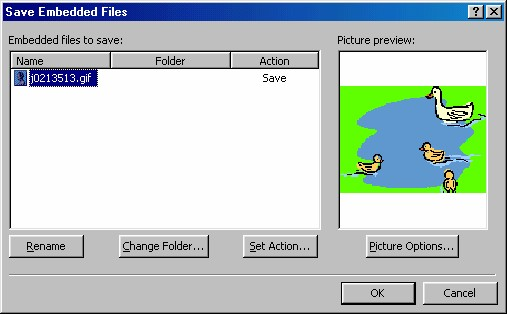

4 Animasi gambar GIF
Selain kedua jenis animasi tersebut, Anda bisa menggunakan animasi gambar GIF.
Animasi ini dihasilkan oleh sekumpulan gambar dengan format .gif. File animasi ini
memiliki ekstensi yang sama dengan file gambar gif biasa.
Bagimana membedakan keduanya? Clip Organizer akan memberi tanda kuning di
pojok kanan bawah bagi file -file animasi ini.
Kalau gambar sudah terpasang di halaman? Anda bisa mengaktifkan tab Preview
untuk mengujinya. Tampilan preview akan menjalankan animasi.
Bailah, mari kita memasang file animasi GIF ini dengan langkah sebagai berikut:
1. Buatlah halaman baru. Lalu bukalah Clip Organizer, yaitu aktifkan Insert _
Picture _ Clip Art. Muncul Task Pane topik Insert Clip Art.
Gambar 8.30 Icon Clip Organizer
2. Klik icon Clip Organizer, lihat Gambar di atas.
3. Setelah Clip Organizer tampil, bukalah folder Office Collections _ Animals.
4. Kemudian carilah gambar yang mengandung tanda animasi, yaitu tanda
berwarna kuning terletak di pojok kanan bawah, lihat Gambar 8.31.
Gambar 8.32 Tanda animasi file .GIF
5. Sorotlah salah satu gambar animasi yang Anda inginkan, misalnya gambar itik.
6. Klik gambar tersebut lalu klik perintah Copy.
7. Kembali ke halaman FrontPage, klik kanan lokasi penyisipan gambar lalu klik
perintah Paste. Gambar muncul di lokasi tersebut.
8. Simpanlah halaman yangmengandung gambar tersebut, pada kotak dialog
penyimpanan gambar, klik OK.

Gambar 8.34 Kotak dialog penyimpanan gambar
9. Tampilkan halaman tersebut pada browser, hasilnya halaman animasi itik dan
anak-anaknya yang lucu.
Gambar 8.35 Urut-urutan animasi GIF
Anda bisa memilih gambar lain dengan cara yang sama seperti uraian di atas.
Copyright © Herlan Lesmana
Created with the Freeware Edition of HelpNDoc: Single source CHM, PDF, DOC and HTML Help creation